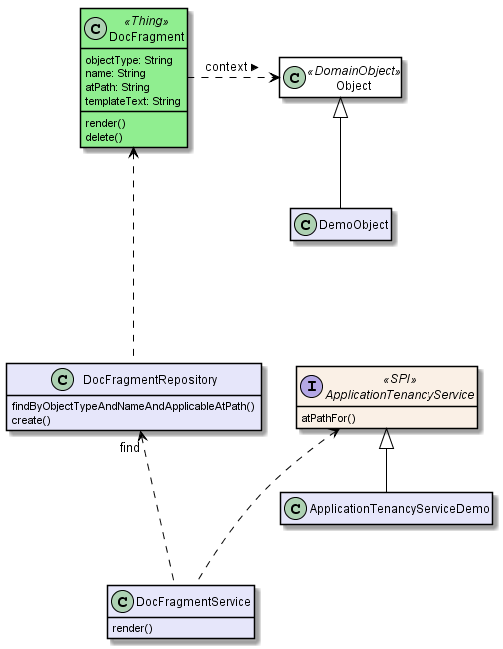

Document Fragment Subdomain
This module (incode-module-docfragment) is a simple wrapper around the Freemarker library module to interpolate fragments of text with respect to a domain object.
The module defines only a single entity - DocFragment - which holds the template text. The result of the interpolation is a simple string; normally the calling object will then persist this somewhere (eg for use when rendering a Document as provided by the Document subdomain module).
Screenshots
The module’s functionality can be explored by running the quickstart with example usage using the org.incode.domainapp.example.app.modules.ExampleDomDomDocFragmentAppManifest.
The home page shows some sample DocFragments, along with some DemoCustomer and DemoInvoice domain objects that use the module:
{kind=link}
There are four DocFragments for DemoCustomer, with different names and atPaths, and some DocFragments for DemoInvoice with different atPaths.
|
The remaining screenshots below do demonstrate the functionality of this module, but are out of date in that they are taken from the original isisaddons/incodehq module (prior to being amalgamated into the incode-platform). |
For a DemoCustomer (with a global "/" atPath) we can invoke the "render" action:
{kind=link}
This updates the "rendered" property, interpolating the state from the DemoCustomer domain object:
{kind=link}
For a different DemoCustomer with a different ("/FRA") atPath, we can do likewise:
{kind=link}
This looks up a different DocFragment (for the "/FRA" atPath), resulting in a different rendering:
{kind=link}
For the DemoInvoice, one of the instances is for an atPath ("/ITA") where there is only a global DocFragment:
{kind=link}
When this is rendered:
{kind=link}
Then the rendering uses the "global" DocFragment:
{kind=link}
Note also that the DemoInvoice has a JODA LocalDate. This is interpolated as a date, rather than as a generic Object.
Domain Model
The following class diagram highlights the main concepts:

The central concept is DocFragment, which holds some Freemarker template text with placeholders to be interpolated by the state of a domain object. It is identified by an objectType, a name and an atPath:
-
the
objectTyperepresents the type of object that this fragment is intended to interpolate. This is an alias for the type’s concrete class, and is usually defined by@DomainObject(objectType=…). -
the
namedistinguishes between potentially many fragments for a given object type. There are no restrictions as to its value; it might correspond to the name of a property of the object, or of an action, or anything else. -
the
atPath(application tenancy path) allows multiple translations of the fragment. The module will attempt to match the most specific translation, eg "/ITA" (Italy) will take precedence over "/" (Global) if both are present.
The domain object is used in two ways:
-
its state is used when interpolating the template text
-
(optionally but typically) it is used to infer the
atPath, in other words whichDocFragmenttranslation to use.
The API and mandatory SPIs for the module are discussed below.
API
The programmatic API to the module is DocFragmentService:
public class DocFragmentService {
public String render(
Object domainObject, (1)
String name) (2)
throws IOException, TemplateException, RenderException { ... }
...
}
public String render( (3)
Object domainObject,
String name,
String atPath)
throws IOException, TemplateException, RenderException { ... }
}| 1 | provides the state for the interpolation into the fragment’s template text, and is also used to determine the atPath of the DocFragment to use to render |
| 2 | corresponds to the name of the DocFragment to use to render. |
| 3 | overload that allows the atPath to be specified explicitly (rather than inferred from the supplied domain object) |
The render(…) methods will always return the rendered text, else an exception. A RenderException is thrown if a DocFragment could not be located.
SPI
The module defines a single (mandatory) SPI service, ApplicationTenancyService:
public interface ApplicationTenancyService {
String atPathFor(Object domainObject); (1)
}| 1 | Used by DocFragmentService to determine the atPath of the domain object, so as to lookup the appropriate DocFragment. |
How to configure/use
Classpath
Update your classpath by adding this dependency in your dom project’s pom.xml:
<dependency>
<groupId>org.incode.module.communications</groupId>
<artifactId>incode-module-communications-dom</artifactId>
<version>1.15.0</version>
</dependency>Check for later releases by searching Maven Central Repo.
For instructions on how to use the latest -SNAPSHOT, see the contributors guide.
Bootstrapping
In the AppManifest, update its getModules() method, eg:
@Override
public List<Class<?>> getModules() {
return Arrays.asList(
...
org.incode.module.docfragment.dom.DocFragmentModuleDomModule.class,
);
}Known issues
None known at this time.
Dependencies
Maven can report modules dependencies using:
mvn dependency:list -o -pl modules/dom/docfragment/impl -D excludeTransitive=truewhich, excluding the Incode Platform and Apache Isis modules, returns no direct compile/runtime dependencies.
From the Incode Platform it uses:
-
base library module
-
freemarker library module
The module also uses icons from icons8.